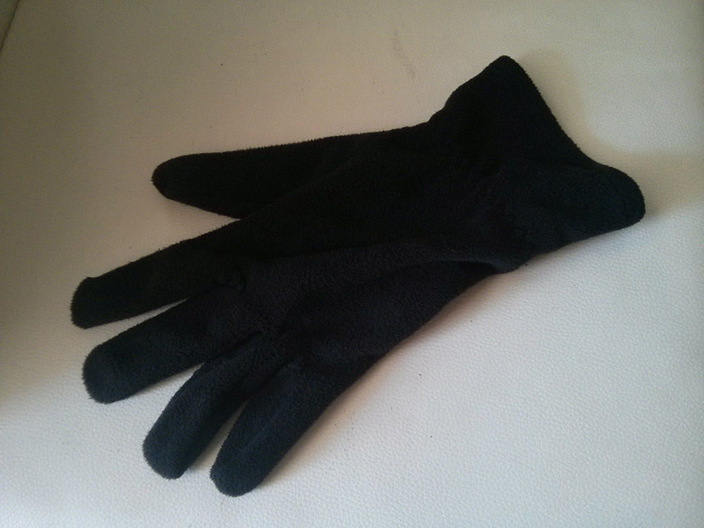

El guante sin pareja

El guante sin pareja
Esta es la primera vez que escribo un artículo personal en este blog. Es una corta historia que por lo menos a mí me pareció bastante curiosa.
En el bus
La mitad de los días de la semana, mi rutina al volver a casa es coger el metro y después el autobús. No soy de los que tienen prisa en bajar, espero que el autobús llegue a la parada y cuando para, es cuando cojo mi mochila y me dirijo hacia la puerta.
Ese día viajaba en la zona de atrás del bus. Al llegar a mi parada, el conductor cerró la puerta demasiado rápido y no me dió tiempo a llegar a ella, por lo que mientras seguía entrando gente, me acerqué hasta la mitad del bus y le dije al conductor que abriera otra vez las puertas.
Como es normal, subí el tono de voz para que se enterase, pero iba con la radio y no me oyó. Los que si me oyeron fueron el resto de personas que iban en el bus.
Empecé a andar más rápido, ya que la siguiente parada me obligaba a andar 15 minutos más y era bastante tarde. Lo que me sorpredió, es que a pesar de que todos me miraban, ninguno de los que estaban cerca del conductor le dijo que abriera.
Es por ello, que mientras todos seguían cruzandome la mirada, tuve que correr hacía el conductor para avisarle. Cuando estaba a un metro de él, pude decirle que me abriera y conseguí bajar, pero mientras me acercaba choqué con varias personas y el guante se me cayó del bolsillo.
Y me quedé sin guante
No sé si fue indiferencia, falta de reacción o ¿verguenza?, de pedir al conductor que me abriera. A veces no nos damos cuenta de que un pequeño gesto puede ayudar a otra persona, o estamos demasiado cansados como para preocuparnos por algo que no nos ocurre a nosotros o no nos parece importante.
Esta es la historia de como mi guante se quedó sin pareja.